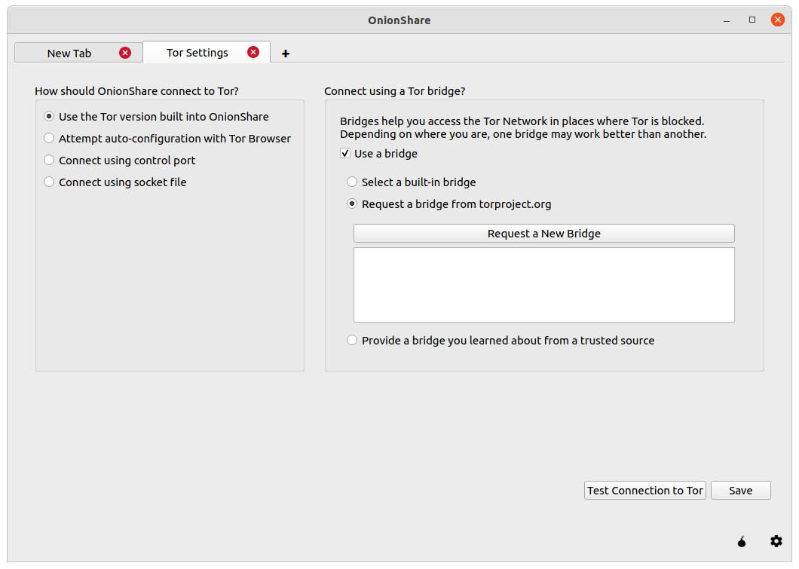
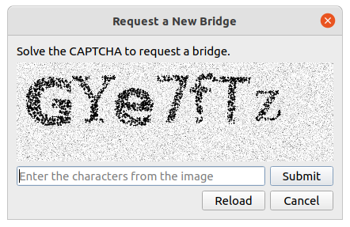

OnionShare 2.5 fixes security issues and adds censorship circumvention features
The OnionShare team has just released OnionShare 2.5! This version fixes security vulnerabilities uncovered in our first comprehensive security audit, and also includes improved censorship circumvention features. Download it from onionshare.org.
OnionShare's first security audit
Late last year, the OnionShare project was lucky enough to be get a comprehensive security audit from the non-profit penetration testing group Radically Open Security. This work was funded by Open Technology Fund's Red Team Lab.
Fortunately, ROS didn't find any issues with a threat level of critical or high, but they found 2 that were elevated, 3 that were moderate, and 4 that were low. All vulnerabilities have been fixed in version 2.5.
From the report:
The penetration test goals were the de-anonymization of users and code execution on any of the involved parties, which was not found possible in the time allocated for the engagement. This is most likely due to the choice of offloading the client interaction and authentication fully on the Tor-browser and relying on the security assumptions of a recent and well maintained browser. Additionally, the usage of stable third party libraries for file and network handling, as well as the separation of logic and user interface exposed only a minimal attack surface. User-controlled input is minimal and in most cases sanitized or validated.
...
Our general impression is that the Onionshare project has no major security vulnerabilities and can be used within the properly documented boundaries. Sane default configurations were chosen and inexperienced users are warned about the consequences of sensitive configuration changes.
Check out the full penetration test report, which I summarize at the end of this post.
Improved censorship circumvention
It's becoming alarmingly more common to see hostile governments pressure internet providers to block access to the Tor network. For example, in December, several Russian ISPs started blocking Tor as well as censoring access to torproject.org. Because OnionShare relies on Tor, this means that Russia is preventing people from using OnionShare as well.
This update greatly improves our support for bridges, which let people quickly and easily circumvent this sort of censorship. A bridge is a Tor server, generally with a secret IP address so it's harder to block, that just forwards traffic onto the Tor network for people. So if you live in Moscow and you can't connect to Tor because your ISP is blocking the IP addresses of public Tor nodes, you can configure OnionShare (or Tor Browser) to use a bridge. This way you'll connect to an IP address that isn't blocked, thus bypassing the censorship.
OnionShare has supported bridges for some time, but one of the coolest features of this release is the ability to automatically fetch bridges from the BridgeDB service directly from the settings tab.

When you click "Request a New Bridge", you must solve a CAPTCHA to get access to the bridge settings.

But if the ISP is already blocking access to the Tor network and to torproject.org, what stops them from blocking BridgeDB also? To prevent this from happening, OnionShare uses a tool called meek that uses a technique called domain fronting to disguise the request to BridgeDB as an innocuous request to a major CDN, the kind that you make thousands of times a day as you use the web. This prevents these countries from being able to block the BridgeDB request without blocking the whole CDN itself, which would break large portions of the internet for its users.
OnionShare has also added support for Snowflake bridges which uses WebRTC (the technology that we all use for our all-too-frequent video conferences) to allow anyone to quickly and easily run a bridge.
If you want to help censored users connect to Tor, you can actually just turn on Snowflake in the sidebar of my blog. As long as this tab is open, your browser will be running a Snowflake bridge.
Summary of OnionShare 2.4's security audit
Improper input sanitization and an out-of-bounds read in Qt
If a user was running the graphical version of OnionShare and an attacker entered a malicious string containing HTML in the path of the URL, and the user running OnionShare opened the History pane (which is collapsed by default), this HTML would be rendered by Qt, the library that OnionShare uses for its GUI.
When the ROS pen testers discovered that they could use this to display arbitrary images in the History pane, they started attacking Qt's image rendering and uncovered a vulnerability in Qt's image renderer. When used in conjunction with this sanitization issue in OnionShare, an out-of-bounds read was possible, causing OnionShare to crash.
ROS responsibly disclosed this vulnerability to the upstream Qt project which has fixed the issues. We're really proud that our project helped make Qt more secure.
Receive mode's request limit was easily DoS-able
Receive mode had a rate limit built in to try to prevent race conditions with folder creation during concurrent uploads. It turns out that it's pretty easy to force a denial-of-service attack by submitting the form more than 100 times per second, which would prevent authentic requests from being submitted. We solved this by using microseconds in the folder creation system, which now makes it impractical to hit the rate limit.
Chat mode issues
ROS discovered that there were a variety of issues in Chat mode, most of which were closely related to one another, and so were fixed all at once. They were mostly impersonation attacks. These included:
- The ability to change your username to something almost identical to that of another user, like by having whitespace at the end of the username, or by using special characters
- It was possible to join the chat but not emit the
joinevent, which meant you were effectively invisible in the room, unbeknownst to the other parties, which might be a privacy issue - Similar to the above, it was possible to post messages to the chat room without technically being visible, or with another person's username, leading to confusion or impersonation
- And again, similar to the above, it was possible to spoof the
leaveevent, making people think you had left the chat room when in fact you were still able to read subsequent chat messages
Minor issues
ROS also discovered a handful of minor issues, including:
- The Linux packaging using Snapcraft and Flatpak could be hardened prevent read-only access to the user's home folder
- The Content Security Policy header could be disabled but not configured
It's important to keep in mind that because of how OnionShare is designed, all of the vulnerabilities discovered could only be exploited if the attacker had access to the OnionShare site. It would either need to be a publicly advertised OnionShare address, or the attacker would need to intercept or be directly sent an OnionShare address and private key.
I want to take the opportunity to thank Radically Open Security, as well as the Open Technology Fund, for conducting such a comprehensive audit. ROS is a talented and professional organization, and it was really easy to work with them to address these issues.